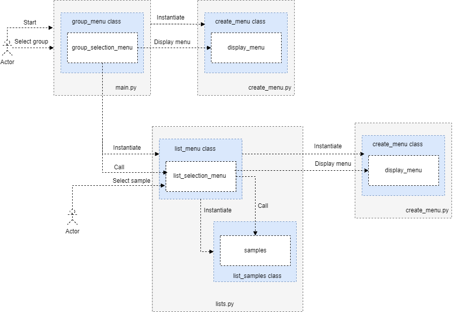

Package code
last update: 02/10/23
 API reference documentation
API reference documentation
Overview
The examples API reference documentation is created automatically from the docstrings contained in the code.
The following is the command used to generate the API documentation, executed
from the directory: <user path>\<python project>:
pdoc --force --html .\code --output .\reference\
[!NOTE] This README file is the landing page of the API reference documentation because it is included by the
code/__init__.pyThis is why:The landing page for the documentation is the project's top-level
<modulename>/__init__.pyfile that in our case iscode/__init__.pyAdding a module-level docstring here is a great way to introduce users to the project.
You can include external Markdown files in your documentation by using
reStructuredText's .. include:: directive. For example, a common pattern is to
include your project's README in your top-level __init__.py like this:
.. include:: ./README.md
For more information, see include Markdown files?.
Running code examples
The code examples are contained in the folder Python/code and grouped by areas
in the related foldera. For example:
code/apps. Ready to run apps.code/builtin_typesReady to run examples showing the use of built-in types.
These folders contain modules with examples ready to run. For example, the
module code/builtin_types/file_examples.py contains file related examples.
Aong with these example folders, there are menu utilities used to create menus specifc to each example folder. For example:
code/packages/apps_menu_utilities. Menu to select app samples.code/packages/builtin_types_menu_utilities. Menu to select builtin type samples.
For each area, a two level menus simplifies the selection of the examples to run:
- The first level menu allows the selection of the group of examples.
- The second level menu (sub-menu) allows the selection and the execution of the acual examples.
First level menu
The first level menu is implemented by a main.py module contained in the
specific area folder i.e., the folder that contains the module with the actual
code examples. For this to work, main.py must import the supporting packages,
as shown in the following example, see main.py which
is contained in the code.builtin_types folder.
# Append the path to the package modules location.
import sys
sys.path.append('./code/packages')
import builtin_types_menu_utilities as _menu
import console_menu_utilities as _gmenu
In the previous code snippet,
- The
builtin_types_menu_utilitiespackage allows the selection of the class menu for each set of examples, This must be supported by the package__init__-pymodule. See related note in the second level menu section. - The package
console_menu_utilities, allows the implementation of the group menu.
[!IMPORTANT] To implement a package in a folder, you must define a
__init__.pymodule, which can be empty.__init__.pymay include a README.md file that becomes the landing page for the folder itself and its examples.
__init__.pyallows theimportdirective to refer to the modules in the folder. This for Python interpreter and forpdocwhen generating the reference documentation.
Second level menu
The second level menu is implemented by several modules contained in packages.
Each module implements a menu specific to a particular set of examples.
For example the builtin_types_menu_utilities package contains modules such as:
file_menu.py, string_menu.py, etc..
For this to work, each modlule must import the related sample class and the
package console_menu_utilities, where:
- The sample class allows the selection of the actual examples to run.
- The package
console_menu_utilities, allows the implementation of the specific samples menu.
For example, for the list_menu.py you must have the following imports:
import sys
sys.path.append('./code/builtin_types')
from lists import ListSamples
import sys
sys.path.append('./code/console_menu_utilities')
import console_menu_utilities as _menu
[!IMPORTANT] In the folder that contains the package, you must include a
__init__.pymodule.
__init__.pyallows theimportdirective to refer to the the menu class in each module. This from the related samplesmain.pyvia the simple import:import builtin_types_menu_utilities as _menu.
These are some examples of directives contained in the __init__.py module:
from .string_menu import StringMenu
from .list_menu import ListMenu
from .tuple_menu import TupleMenu
The following figure shows the code involved when the user select a sample to run. For simplicity, the figure shows only the selection of the list samples.

media\samples\python-builtin_types_selection.png
References
- Python 3.11.1 documentation
- PEP 8 – Style Guide for Python Code
- PDoc
- Easy Documentation Generation in Python using PDoc
- Python tutorial samples :heavy_check_mark: :star: :star:
- Python cookbook :heavy_check_mark: :star: :star:
- The Python Mega Course Build 10 Real World Applications
- Github sample repo
- The Python Mega Course: Learn Python in 40 Days with 18 Apps - Udemy class
- Practice Python with 100 Python Exercises - Udemy class
- Tech Tip: Really Simple HTTP Server with Python
- Python Classes and Objects - W3 Schools
Expand source code
"""
.. include:: ./README.md
"""
"""
The landing page for your documentation is your project's top-level
<modulename>/__init__.py file. Adding a module-level docstring here is a great
way to introduce users to your project. For example, the documentation you are
reading right now is sourced from pdoc/__init__.py. You can also include your
title page from a Markdown file.
"""Sub-modules
code.apps-
last update: 01/22/23 — …
code.builtin_types-
last update: 12/17/22 — …
code.docstringcode.language_constructscode.language_typescode.oldpackages-
Directory that contains packages. It allows to direct the interpreter to locate the package via its path.
code.packages-
This is the init.py module makes the directory 'packages' a package. The directory contains several modules that through init are considered …